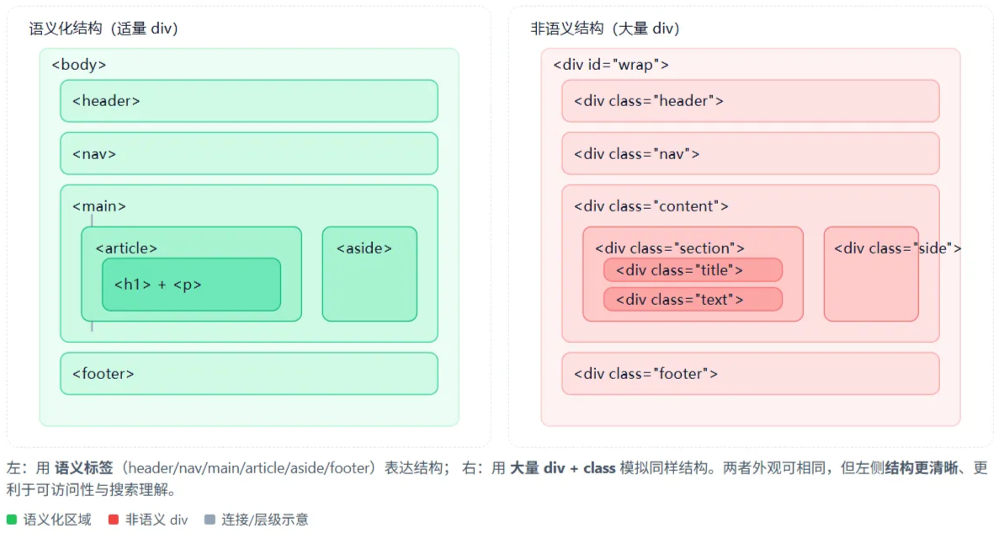
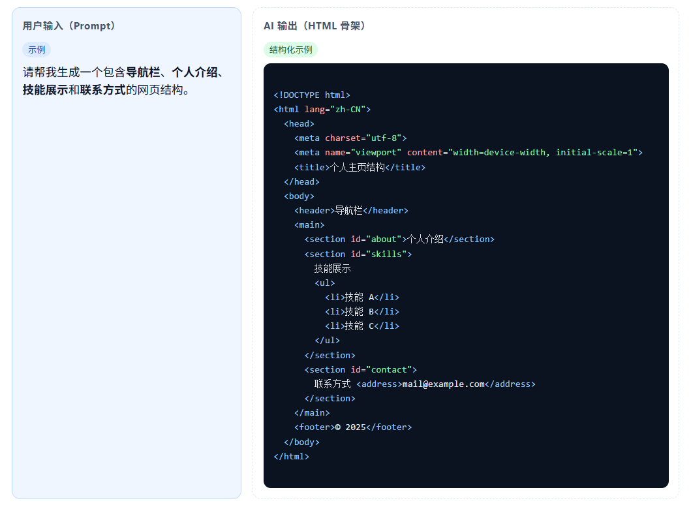
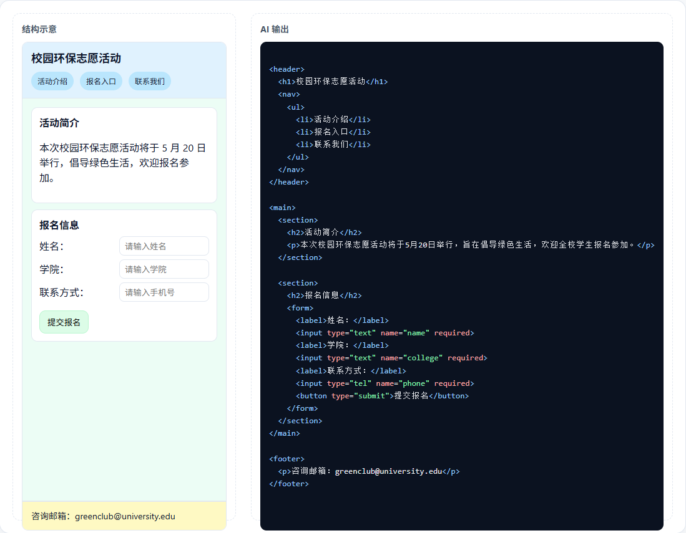

课程内容
详细的课程内容讲解，配合图片和示例，帮助你深入理解每个知识点
网页内容结构化思维
结构化思维的概念与重要性
1. 什么是结构化思维
定义：将复杂信息按照逻辑关系进行拆分、分层、归类，并且以一个稳定的层次结构进行呈现的思维方法。
基本特征：
- 层级清晰：从总体到局部
- 关系明确：父子/并列/交叉
- 内容可复用：可迁移到新场景
2. 在网页制作中的应用
- 内容层：把网站的内容从大到小分成几级，例如"首页 → 栏目 → 页面 → 模块 → 元素"，让每一部分都有清晰的层次和职责。
- 交互层：把用户在网站上的操作流程拆解成多个步骤，比如"点击 → 填写 → 提交 → 反馈"，并明确每一步页面该如何反应。
- 技术层：在代码结构上实现"结构、样式、行为"分离——HTML负责内容框架，CSS管理视觉样式，JavaScript处理交互逻辑。
3. 结构化思维的核心原则
- 分层：从站点→栏目→页面→模块→组件→元素逐级拆分。
- 分类：按照"功能、主题、任务、时间"等维度对内容进行分类，做到不重复、不遗漏，方便查找和维护。
- 关联：明确各部分之间的关系，比如哪些内容被包含、哪些页面相互引用、哪些信息是要提前展示的。
- 简化：去掉重复或不必要的内容入口，只保留主要路径，让结构更清晰，避免"层级太多看不清"。
网页信息架构的设计原则
1. 信息架构的概念
- 定义：信息架构就是规划网页内容的摆放方式。它通过合理的分类、命名和导航设计，让用户能快速找到需要的信息，并清楚自己在网站的哪个位置。
- 与用户体验的关系：好的信息架构能让用户"找得到、看得懂"；交互设计和视觉设计则在此基础上，让网页"好用、好看"。
2. 信息架构设计原则
- 用户导向：围绕用户的目标和习惯设计结构，而不是按照公司部门或内部逻辑来划分。
- 一致性：网站中导航、命名、按钮样式保持统一，让用户不需要重新了解摸索。
- 可扩展性：提前为未来新增内容留出层级或栏目空间，避免结构频繁重做。
- 可预测性：用户点击某个入口后，能清楚地预期自己将进入什么内容，不会出现"标题和内容不符"的情况。
层次结构设计方法
- 层级深度：一般不超过4级；移动端建议≤3级，避免出现"层层点进找不到想要的内容"这种情况。
- 宽度与深度的平衡：同层级项目过多会难以选择，过深会路径冗长；可按"7±2"原则粗略限制同层数量。
- 导航路径设计：主导航承担一级核心入口；二级内容放在次级导航；页底提供补充链接与法务信息。
- 面包屑导航：使用"首页 > 栏目 > 子栏目 > 当前页面"，帮助用户定位与返回上级。
HTML5语义化标签与结构化实现
语义化标签在结构化设计中的应用
1. 语义化标签的意义
语义化标签是"结构化思维"的代码表达方式，用来说明网页中各部分的层级、功能和关系。它让浏览器、搜索引擎和辅助工具（如读屏器）都能理解页面的逻辑结构。
2. 为什么语义化很重要
- 结构更清晰：减少大量
<div>的堆叠，让代码可读性更高。 - 便于维护：标签含义明确，开发者能更容易理解和修改。
- 机器可读：有助于搜索引擎识别主要内容，也能提升网页的可访问性。
3. 标签选择的基本思路
- 按层级选：整体框架使用
<header>、<main>、<section>、<footer>。 - 按功能选：独立内容块用
<article>，导航区用<nav>，侧栏内容用<aside>。 - 按内容选：图文配合时用
<figure>和<figcaption>；时间信息用<time>；引用内容用<blockquote>和<cite>。
常用HTML5语义化标签详解
1. 页面结构类标签

<header>：页面或分区的头部，可放Logo、标题、导航。<nav>：主要或次级导航链接。<article>：独立可复用内容，如文章、产品卡片。<section>：主题分区，通常包含一个标题。<aside>：补充内容区，如侧栏、推荐。<footer>：底部信息区，常含版权与联系方式。
2. 内容表达类标签

<figure>/<figcaption>：图或表与说明文字的组合。<blockquote>：长引用文本，可配合<cite>表示来源。<time>：标记时间或日期，可加机器可读格式。<mark>：高亮关键词，用于强调或搜索命中。<details>/<summary>：可展开/折叠的信息块，常用于FAQ或补充说明。
3. 辅助与数据类标签
<address>：放联系信息，常位于页脚。<data>：绑定人类可读数据与机器可识别值（如价格、编号）。
多媒体标签在语义化结构中的应用
1. 常见的HTML5多媒体标签
<img>：用于插入图片，必须配合alt文本（替代文字）说明图片内容。<figure>与<figcaption>：用于为图片、表格或代码片段添加结构化说明。
<video>：用于插入视频，可添加controls（播放控制）、poster（封面图）和track（字幕）等。<audio>：用于音频播放，建议加上controls以便用户操作。
<picture>：用于响应式图片加载，可根据设备大小、分辨率自动选择最合适的图片资源。
2. 多媒体在网页结构中的作用
- 强化内容表达：图片、视频、音频不只是装饰，而是承载信息的一部分，应作为"独立内容单元"来设计。
- 适应不同设备：
<picture>与srcset/sizes可让网页在不同屏幕下加载合适的图片大小。 - 提升可访问性：为图片添加
alt文字，为视频提供字幕或音频描述，让更多用户都能理解网页内容。
教学提示：当你在使用图片或视频时，不只是"让网页更好看"，而且还要思考：它是否表达了一个信息？有没有对应的说明来描述？
AI辅助网页结构设计
理解AI在网页结构设计中的角色
1. AI是"设计助手"，不是"替代开发"
AI的作用在于帮助我们更快地实现网页结构构想，而不是取代人工判断。在网页结构设计中，AI的角色类似于一名"结构顾问"。
2. AI可以帮我们完成的三件事
- 结构转化：把"文字化的结构思路"转化成标准HTML骨架。
- 逻辑检查：帮助我们验证网页结构的层级、语义是否合理。
- 模板生成：根据描述生成初始模板，节省从零开始搭建的时间。
3. 开发者的任务
- 提供清晰的结构化思维
- 学会提出准确的结构需求
- 判断AI的输出是否合理
- 对生成结果进行人工微调与优化
AI协作工作流程
我要一个包含导航栏、个人简介和联系方式的网页。
头部是导航栏，主体放个人简介，底部是联系方式。
请帮我生成一个包含导航栏、简介、技能展示的网页结构。
确认导航是否在上方，语义标签是否正确，结构清晰。
帮我修改导航栏代码，显示异常需要调整。
AI生成结构的基础方法
1. 结构生成的核心思路
与其让AI"写代码"，不如让AI"画出网页框架"。AI并不需要我们写出语法，只要我们清楚地描述网页内容层次，AI即可将描述转化为HTML骨架。
2. 自然语言描述示例
向AI输入："请帮我生成一个包含导航栏、个人介绍、技能展示和联系方式的网页结构。"
3. 检查要点
- 层次是否清晰（如：
header→main→footer） - 标签语义是否正确（如：导航用
<nav>，主要内容放在<main>） - 标题是否有逻辑层级（
h1、h2、h3依次递进） - 是否便于扩展（未来是否可轻松加入其他内容）
4. 网页框架优化技巧
在AI输出后，可以继续追问：
- "请帮我检查结构层次是否合理。"
- "有哪些标签可以用语义化标签替代？"
- "这个结构是否方便我后续添加'作品展示'部分？"
网页生成实践
1. 演示主题
任务目标：生成一个包含活动介绍、报名表单和联系方式的"校园活动报名页"结构，使用HTML5语义化标签。
输入示例："请帮我生成一个包含活动介绍、报名表单和联系方式的网页结构，使用HTML5语义化标签。"
2. AI生成内容示例
3. 结构分析与讲解
（1）结构层次
从 <header> → <main> → <footer> 三段式结构，层次清晰，符合网页的基本逻辑。
（2）语义化标签使用
<nav>：用于定义导航区块<section>：用于划分主要内容模块<footer>：用于底部信息- 减少了
<div>的滥用，使结构更易读、易维护
（3）标题层级
<h1>用于主标题<h2>用于子模块标题- 保证标题层级逐级递进，符合语义规范
（4）改进建议
- 可在
<footer>内增加<address>表示联系信息 - 可在"报名信息"部分加入提示文本或示例输入，提升用户体验
4. 结构优化演示
通过追加提示语，AI可进一步优化结构。
优化输入示例："在'报名信息'部分加入一个输入提示示例，使用 <fieldset> 和 <legend> 标签，让表单结构更清晰。"